Make Menus
The core parts of the game are added now. The player will also a way to start and restart the game and quit if they would like. This section will take you through added in a start menu, a way to restart the game and an option to quit the game.
Setup
-
Open the "Scenes" folder in your Project Files.
-
Rename the current scene from
SampleScenetoGame. -
Right click anywhere in your Project files and Create a new Scene called "Main Menu":
Create > Scene > Scene
-
Open your main menu scene by double-clicking it in the Project Files.
-
Add a label through right clicking in the Hierarchy window:
UI (Canvas) > Text - TextMeshPro
-
Double-click the canvas button in the Hierarchy window.
This will zoom you out to where you can see the whole of the canvas.
-
Click your canvas.
-
Find the
Canvas Scalercomponent. -
Change the UI Scale Mode to Scale With Screen Size.
-
Set your reference resolution to X=1920, Y=1080.
-
Change these settings for the text object.
Rect Transform Pos X 0 Pos Y 400 Width 1000 Height 200 TextMeshPro - Text Text Main Menu Font Size 80px Font Style Bold Alignment Center Success
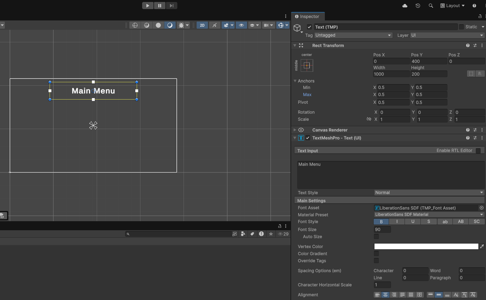
-
Add a button:
UI (Canvas) > Button - TextMeshPro
This will be the play button on the opening menu.
-
Change these settings for the button object:
Rect Transform Pos X 0 Pos Y 0 Width 400 Height 100 -
Change these settings for the button's text:
TextMeshPro - Text Text Play Font Size 60px Font Style Bold
Create Scene Transition System
-
Open your
Scriptsfolder in the Project files. -
Create a new MonoBehaviour script called "SceneLoader":
Create > MonoBehavour Script.
-
Create a new empty object: > Create Empty
-
Name it
SceneLoader. -
Add the
SceneLoaderscript to the SceneLoader game object. -
Open the
SceneLoaderscript.
Scene Transition
To do scene transitions, you must use the UnityEngine.SceneManagement package. Visual Studio will import a package automatically whenever you use a function the requires it.
-
Create a
GoToScenefunction that takes in anint:6 7 8 9
public void GoToScene(int sceneIndex) { SceneManager.LoadScene(sceneIndex); } -
Overload the
GoToScenewith a function that takes in astring:6 7 8 9
public void GoToScene(string sceneName) { SceneManager.LoadScene(sceneName); } -
Save your changes by pressing Ctrl+S.
Success
1 2 3 4 5 6 7 8 9 10 11 12 13 14 15
using UnityEngine; using UnityEngine.SceneManagement; public class SceneLoader : MonoBehaviour { public void GoToScene(int sceneIndex) { SceneManager.LoadScene(sceneIndex); } public void GoToScene(string sceneName) { SceneManager.LoadScene(sceneName); } }
Linking Buttons
-
Minimize Visual Studio.
-
Select your play button and scroll down in the Inspector.
At the very bottom of the
Buttoncomponent, you'll see an empty list with the header "On Click ()". This is an event. You give it a list of functions that will execute when theOnClick()event occurs. -
Hit the "+" button under the list.
-
Drag and drop your SceneLoader object into the empty
GameObjectslot.You will see a dropdown that says "No Function".
-
Open the dropdown and select your
GoToScenefunction that takes in a string:Scene Loader > GoToScene (string)
An empty field will appear under the dropdown. That is the parameter value.
-
Type "Game" into the parameter field
Warning
Strings are case-sensitive, make sure you write "Game" exactly like that.
Success
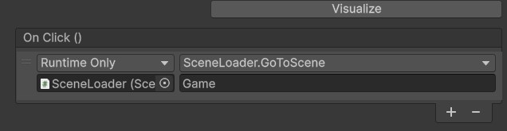
-
Save your Unity project by pressing Ctrl+S.
Add Scenes to Scene List
-
Open your Build Profiles.
File > Build Profiles
or hit Ctrl+Shift+B.
Success
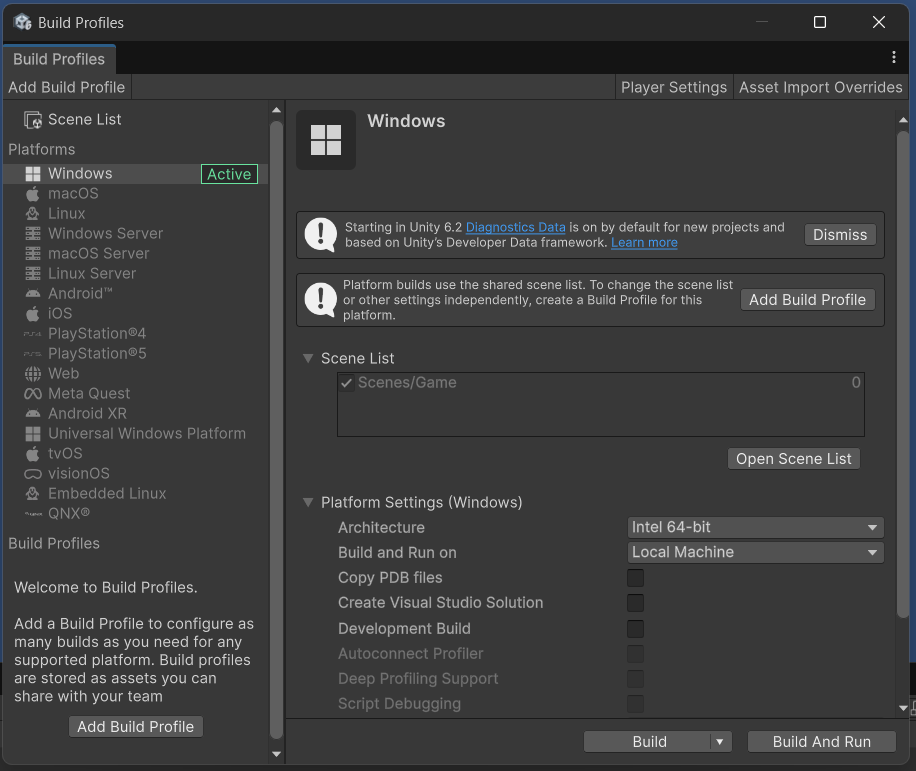
-
Press Open Scene List.
-
Drag and drop all the scenes from your Project files into the Scene List.
Tip
To select multiple things at a time, hold Shift while selecting each of them.
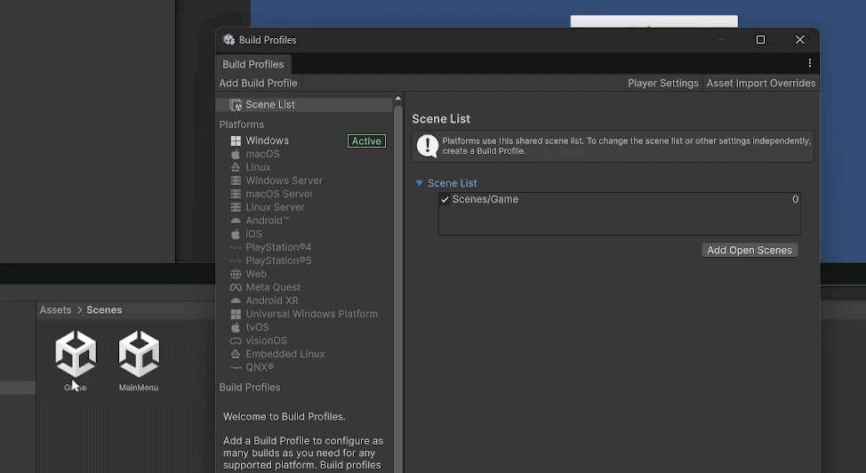
-
Close the Build Profiles menu.
-
Save your Unity project by pressing Ctrl+S.
-
Hit the play button to test your menu and ensure that you can proceed to the game after the menu screen.
Return to Main Menu After Winning
-
Go back to the Game scene by double-clicking it in the Project Files.
-
Right-click the Canvas in the Hierarchy window and create an Empty Game Object.
Create Empty
Bug
If you create the empty object without right-clicking the Canvas, the next steps will not work.
Be sure your empty object has a Rect Transform component.
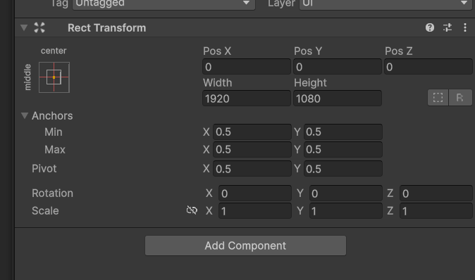
-
Name it "WinScreen".
-
Right-click the WinScreen object and add an Image object:
UI (Canvas) > Image
-
Change the image color to black in the Inspector tab.
-
Right-click the WinScreen object again and add a Text object:
UI (Canvas) > Text - TextMeshPro
-
Select the text object, image object and WinScreen at the same time.
-
In the rect transform, click the Anchor Presets in the left side of the component.
-
Hold Alt+Shift to set the pivot and position as well, then select furthest bottom right preset.
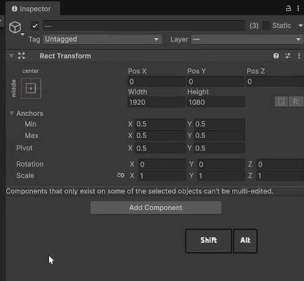
Success
Your game view should be covered by the black image, with text in the top-left corner.
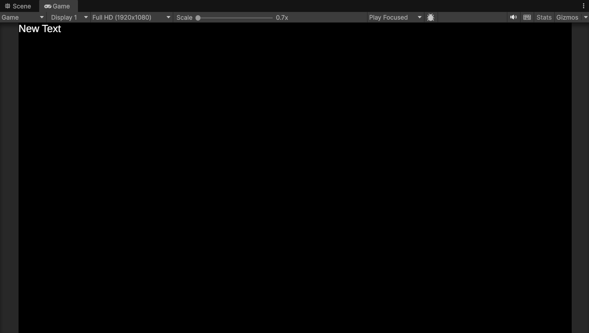
I can't see the text
If you can't see the text, your image is most likely covering it. Make sure the items inside WinScreen are in this exact order from top to bottom.
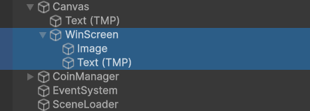
-
Right-click WinScreen and create a Button:
UI (Canvas) > Button - TextMeshPro
-
Change these settings for the text inside WinScreen:
TextMeshPro - Text Text You win! Font Size 100px Font Style Bold Vertex Color Yellow Alignment Justify center
Vertical align center -
Change these settings for the button in WinScreen:
Transform Pos X 0 Pos Y -150 Width 400 Height 75 -
Change these settings for the text inside the button in WinScreen:
TextMeshPro - Text Text Back To Menu Font Size 40px Font Style Bold -
Change these settings for the image in WinScreen:
Image Color Alpha (A): 200
Win Screen Logic
Set up SceneLoader
-
Create an empty object in the Hierarchy tab:
Create Empty
-
Rename it to "SceneLoader".
-
Add the
SceneLoadercomponent. -
Add the
GoToScenefunction that takes in a string to the "Back To Menu" button's On Click () function list. -
Type "MainMenu" into the parameter field.
Warning
Make sure your scene name matches what you type into the
GoToScenestring parameter. If it doesn't it will be unable to find the scene and it will not work.Success
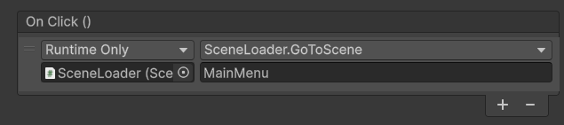
Show Win Screen If All Coins are Collected
-
Open your
CoinManagerscript. -
Add a reference to the WinScreen GameObject:
6public GameObject winScreen; -
Hide the win screen on Start:
12 13 14 15 16
void Start() { totalCoins = transform.childCount; winScreen.SetActive(false); } -
Show win screen when the player wins:
18 19 20 21 22 23 24 25 26 27
public void addToScore(int add = 1) { score += add; scoreLabel.SetText(score.ToString()); if (score >= totalCoins) { winScreen.SetActive(true); } }Success
1 2 3 4 5 6 7 8 9 10 11 12 13 14 15 16 17 18 19 20 21 22 23 24 25 26 27 28
using TMPro; using UnityEngine; public class CoinManager : MonoBehaviour { public GameObject winScreen; public TextMeshProUGUI scoreLabel; private int score; private int totalCoins; void Start() { totalCoins = transform.childCount; winScreen.SetActive(false); } public void addToScore(int add = 1) { score += add; scoreLabel.SetText(score.ToString()); if (score >= totalCoins) { winScreen.SetActive(true); } } } -
Test it.
Success
You are able to go from the Main Menu to the Game, and when you win you can go back to the Main Menu.
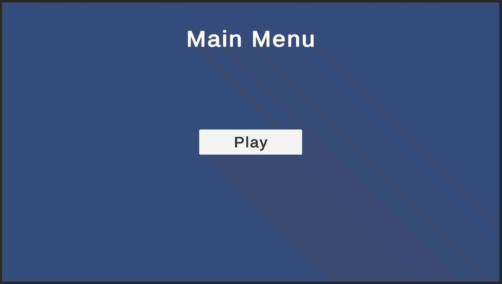
Finally we should add a quit button so people can stop playing the game.
Add Quit Button
-
Go to the main menu.
-
Duplicate your play button by selecting it and pressing Ctrl+D.
-
Drag it down in the scene view or set its Y position to -150 so it is visible.
-
Change its text to say "Quit".
-
Open your
SceneLoaderscript. -
Write this quit function:
16 17 18 19
public void QuitGame() { Application.Quit(); }Success
1 2 3 4 5 6 7 8 9 10 11 12 13 14 15 16 17 18 19 20
using UnityEngine; using UnityEngine.SceneManagement; public class SceneLoader : MonoBehaviour { public void GoToScene(int sceneIndex) { SceneManager.LoadScene(sceneIndex); } public void GoToScene(string sceneName) { SceneManager.LoadScene(sceneName); } public void QuitGame() { Application.Quit(); } } -
Go to your quit button's
On Click ()list.It should have the
GoToScenefunction fromSceneLoader -
Click the function dropdown and change it from
GoToScenetoQuitGame:Scene Loader > QuitGame ()
Testing the Quit Button
Testing the quit button will do nothing in the Unity Editor, it only works in the game build.
Warning
Make sure you change the On Click () function for the quit button and not the play button. Since the inspector looks the same for both buttons, it will be easy to get confused.
Conclusion
Awesome! You should now have a start menu, a way to restart the game and an option to quit the game.
See below for what your screen should look like after completing this section:
Success
You have a main menu with a working play and quit button.
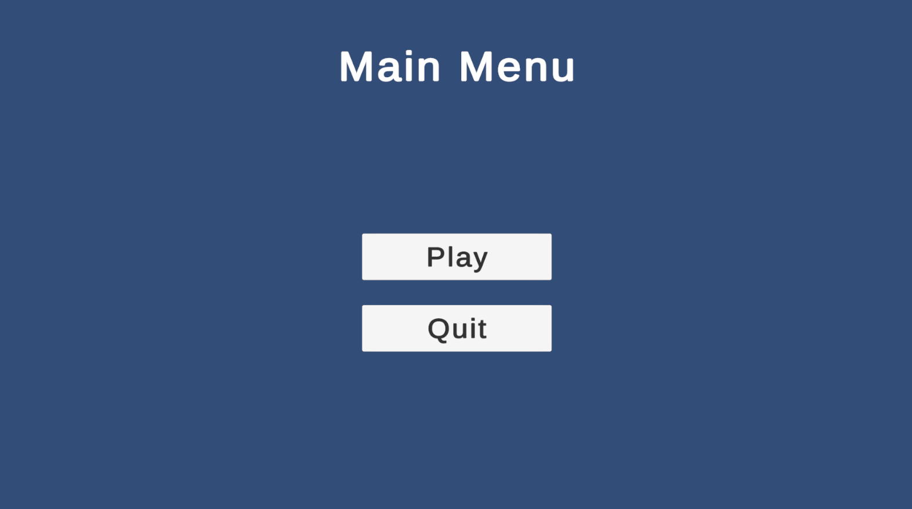
Your game has a win screen that takes you back to the main menu when you collect all coins.
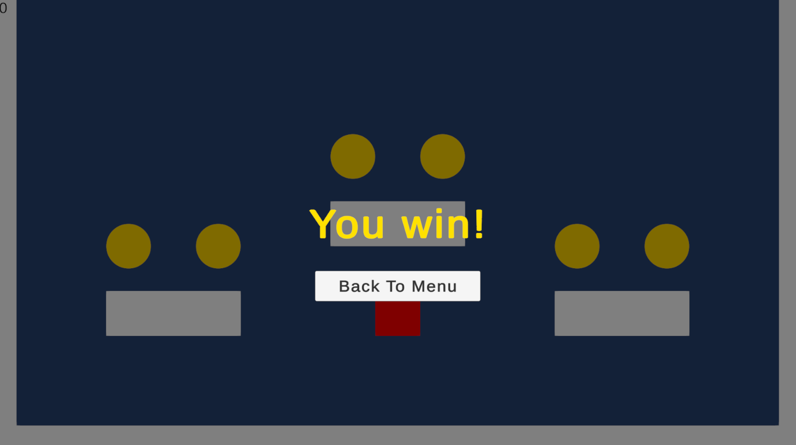